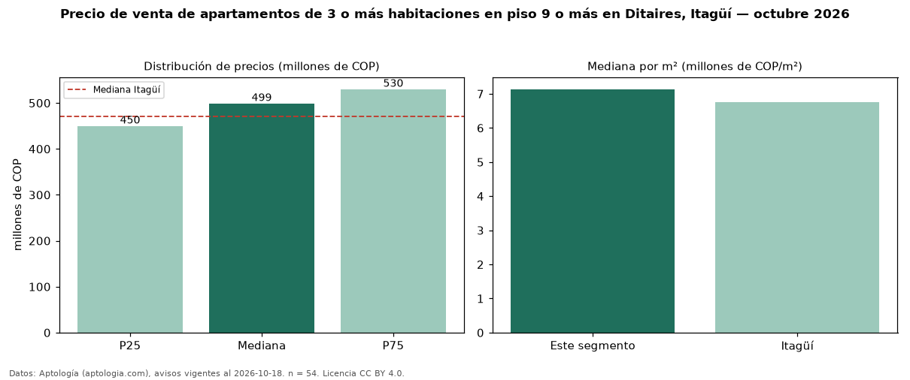

Precio de venta de apartamentos de 3 o más habitaciones en piso 9 o más en Ditaires, Itagüí — octubre 2026
En Ditaires, Itagüí, la mediana de precio de venta de apartamentos de 3 o más habitaciones en piso 9 o más es COP 499 millones, según 54 avisos vigentes. Eso es 4 % más que la mediana de los apartamentos de 3 o más habitaciones en venta de Ditaires (COP 478 millones, n = 169); este segmento reúne el 32 % de esos avisos. Por metro cuadrado, la mediana es COP 7,14 millones/m² (n = 54), 4 % por encima de los apartamentos de 3 o más habitaciones en venta de Ditaires (COP 6,86 millones/m²). El área mediana anunciada es 70 m². La administración mediana declarada es COP 329.500 al mes (n = 40). El estrato más frecuente es 4 (83 % de los avisos con estrato). La mediana de todos los apartamentos en venta de Itagüí es COP 470 millones (+6 % de diferencia). 87 % de los avisos con el dato declara parqueadero. Datos: Aptología (aptologia.com), CC BY 4.0 — https://www.aptologia.com/venta/itagui/ditaires. Archivos: PDF, CSV con las cifras y gráfica PNG.

| Avisos únicos | 54 |
|---|---|
| Percentil 25 | COP 450.000.000 |
| Mediana | COP 499.000.000 |
| Percentil 75 | COP 530.000.000 |
| Mediana por m² | COP 7.135.714 |
Fuente: avisos vigentes de portales inmobiliarios recopilados por Aptología, deduplicados (mínimo 30 avisos únicos por celda). Precios pedidos, no cerrados. Fecha: 2026-10-18.